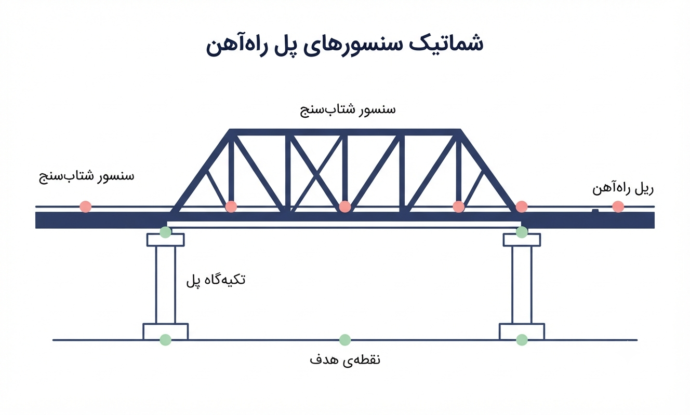
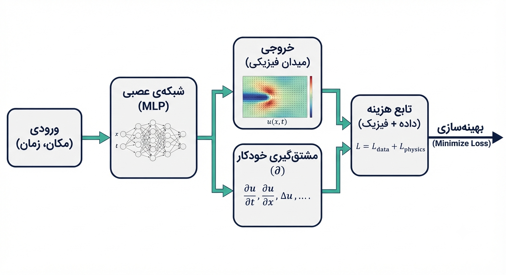
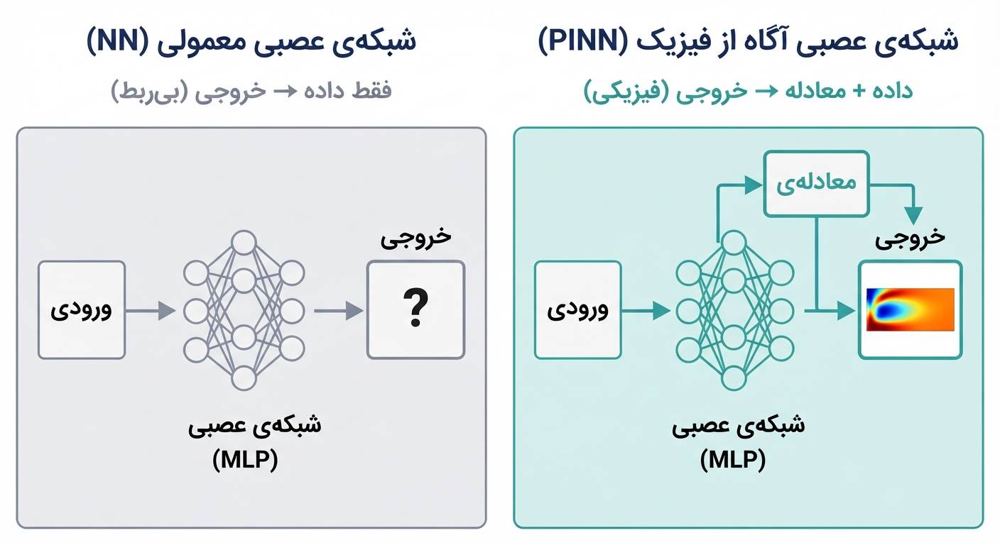

پس از مطالعهٔ این فصل، شما قادر خواهید بود:
در بسیاری از مسائل مهندسی، دادههای تجربی طبیعتی محدود، پراکنده و همراه با نویز دارند. بهعنوان مثال، یک پل راهآهن فلزی را در نظر بگیرید که روی عرشهٔ آن پنج عدد شتابسنج نصب شده است. دادههای ارتعاشی هنگام عبور قطارها از این سنسورها جمعآوری میشوند. اما پاسخ دینامیکی تکیهگاههای پل (که سنسور روی آنها نیست) برای مهندس از اهمیت بالایی برخوردار است. آیا میتوان این پاسخ را فقط با استفاده از چند دادهٔ محدود و یک معادلهٔ فیزیکی بازسازی کرد؟

روشهای عددی کلاسیک، مانند روش المان محدود (FEM)، برای چنین پیشبینیهایی نیازمند مدلسازی کامل هندسه، اعمال شرایط مرزی دقیق، و حل معادلات روی یک شبکهٔ گسسته هستند. اما وقتی دادهها محدود و پارامترهای ماده تا حدی ناشناخته باشند، این روشها با چالش جدی مواجه میشوند؛ چرا که:
شبکههای عصبی آگاه از فیزیک (Physics-Informed Neural Networks - PINN) دقیقاً برای پاسخ به چنین چالشی طراحی شدهاند. این روش با تلفیق دادههای پراکنده با قوانین فیزیک حاکم بر مسئله، امکان تولید یک مدل قابل اعتماد از کل سیستم را فراهم میآورد، بدون اینکه نیاز به مشبندی یا دادههای کامل داشته باشد.
PINN مخفف Physics-Informed Neural Network (شبکهٔ عصبی آگاه از فیزیک) است. این روش برای اولین بار بهصورت سیستماتیک توسط Raissi و همکاران (۲۰۱۹) معرفی شد و از آن زمان تاکنون به یکی از حوزههای پرکاربرد در علم یادگیری ماشین و مهندسی محاسباتی تبدیل شده است.
تعریف ساده:
PINN یک روش محاسباتی برای حل معادلات دیفرانسیل (معمولی یا با مشتقات جزئی) است که با ترکیب دو منبع اطلاعاتی عمل میکند:
شبکه با بهینهسازی همزمان این دو منبع، تابعی را میآموزد که هم با دادهها همخوانی دارد و هم قوانین فیزیک را در کل دامنه رعایت میکند. به عبارت دیگر، PINN به شبکه «عقل سلیم مهندسی» میبخشد و آن را از یک منحنیکش ساده به یک تحلیلگر فیزیکدان تبدیل میکند.
یک PINN از پنج مؤلفهٔ اصلی تشکیل شده است که در یک جریان دادهٔ منسجم به هم متصل میشوند:

| مؤلفه | توضیح |
|---|---|
| ۱. ورودی (Input) | مختصات نقاط در دامنهٔ مسئله (مکان، زمان، یا ترکیبی از آنها) |
| ۲. شبکهٔ عصبی | یک تابع پارامتریک (معمولاً MLP با لایههای پنهان و توابع فعالسازی غیرخطی مانند tanh یا sin) که ورودی را به خروجی نگاشت میکند. |
| ۳. خروجی (Output) | میدان فیزیکی مجهول مسئله (اسکالر مانند دما، یا برداری مانند تغییرمکان) |
| ۴. مشتقگیری خودکار (Autograd) | با استفاده از قابلیت مشتقگیری خودکار در PyTorch یا TensorFlow، مشتقات خروجی نسبت به ورودیها محاسبه میشوند. |
| ۵. تابع هزینه (Loss Function) | ترکیبی از دو مؤلفه: • تلفات داده ($\mathcal{L}_{data}$): میزان انطباق خروجی شبکه با شرایط مرزی، شرایط اولیه و دادههای تجربی. • تلفات فیزیک ($\mathcal{L}_{physics}$): میزان ارضا نشدن معادلهٔ دیفرانسیل در نقاط داخلی دامنه (نقاط کالوکیشن). |
مهمترین مزیت این ساختار، مستقل بودن از مشبندی است. در حالی که المان محدود نیاز به گسستهسازی دامنه دارد، PINN تنها به نقاط تصادفی (کالوکیشن) برای محاسبهٔ تلفات فیزیک نیاز دارد. این ویژگی، PINN را برای مسائل با هندسهٔ پیچیده یا متغیر، بسیار منعطف میکند.
یک شبکهٔ عصبی معمولی، صرفاً بر اساس دادههای ورودی-خروجی آموزش میبیند و به دنبال کشف الگوهای آماری موجود در دادههاست. این رویکرد در مسائل مهندسی با دو نقص اساسی روبروست:

برای روشنتر شدن تفاوت، جدول زیر را در نظر بگیرید:
| معیار | شبکهٔ عصبی معمولی (NN) | شبکهٔ عصبی آگاه از فیزیک (PINN) |
|---|---|---|
| منبع یادگیری | صرفاً دادههای ورودی-خروجی | دادههای ورودی-خروجی + معادلهٔ دیفرانسیل |
| نیاز به داده | زیاد؛ برای پیشبینی قابل اعتماد در کل دامنه | کم؛ معادله، شکافهای داده را پر میکند |
| پیشبینی در نقاط بدون داده | غیرقابل اعتماد؛ خروجیهای بیربط تولید میکند | قابل اعتماد؛ خروجی با قوانین فیزیک سازگار است |
| خروجی | هر چیزی که داده بگوید (حتی ناممکنهای فیزیکی) | چیزی که فیزیک اجازه میدهد |
| نیاز به دانش فیزیک | ندارد | نیاز به نوشتن معادلهٔ حاکم در قالب تلفات دارد |
یک مثال عینی (سیستم تعلیق بوژی قطار):
دادههای شتاب فنرهای بوژی تنها در پنج نقطهٔ زمانی مشخص در دسترس است. شبکهٔ معمولی یک منحنی از میان این نقاط رسم میکند، اما به دلیل ناآگاهی از معادلهٔ حرکت ($m\ddot{x} + c\dot{x} + kx = 0$)، در لحظات دیگر (بهویژه در برخورد با ناهمواریهای ریل) پاسخهای غیرواقعی تحویل میدهد. PINN اما با دانستن معادلهٔ حرکت، جوابی تولید میکند که هم از دادهها تبعیت میکند و هم با قوانین دینامیک سازگار است.
کاربردهای PINN را میتوان در سه دستهٔ اصلی طبقهبندی کرد:
سادهترین کاربرد PINN که بیشترین شباهت را به روشهای کلاسیک دارد. در این حالت، معادله و تمام ضرایب ماده شناختهشده هستند و هدف، یافتن میدان فیزیکی در کل دامنه است.
مثال عینی: شبیهسازی توزیع دما در یک دیسک ترمز. ورودی شبکه ($r,t$) و خروجی ($T(r,t)$) است.
جذابترین و منحصربهفردترین کاربرد PINN. در این حالت، دادههای میدان فیزیکی (تغییرمکان، دما، فشار) از تعداد محدودی نقطه در دسترس است، اما ضرایب ماده (مدول یانگ، ضریب هدایت حرارتی، ضریب میرایی) ناشناختهاند. PINN با تعریف این ضرایب بهعنوان پارامترهای قابلیادگیری، آنها را همزمان با حل معادله تخمین میزند.
مثال عینی: شناسایی مدول یانگ یک پل راهآهن بتنی با استفاده از دادههای شتابسنجی نصبشده روی عرشه.
پیشرفتهترین کاربرد PINN که توانایی آن را در طراحی صنعتی به نمایش میگذارد. در این حالت، پارامتر متغیر (نیروی وارد بر براکت یا ضخامت ورق) بهعنوان یک ورودی جدید به شبکه افزوده میشود.
مثال عینی: تحلیل تنش یک براکت بدنهٔ واگن قطار تحت ۱۰۰۰ سطح بارگذاری مختلف.
| معیار | روشهای کلاسیک (FEM, FDM) | PINN |
|---|---|---|
| وابستگی به مشبندی | وابستگی کامل؛ کیفیت جواب به کیفیت مش گره خورده است. | مستقل از مش؛ تنها به نقاط تصادفی (کالوکیشن) نیاز دارد. |
| شناسایی پارامترهای مجهول | بسیار دشوار؛ نیازمند حلقههای بهینهسازی خارجی و اجرای مکرر حلکننده. | بسیار آسان؛ پارامتر مجهول بهعنوان متغیر یادگیرنده درون شبکه تعریف میشود. |
| سرعت پیشبینی مجدد | هر بار نیاز به حل کامل از ابتدا دارد. | پس از آموزش، پیشبینی نقاط جدید در میلیثانیه انجام میشود. |
| نیاز به داده | نیازمند شرایط مرزی و اولیهٔ کامل. | میتواند با دادههای پراکنده و ناقص کار کند. |
| دقت در مسائل ساده | بسیار بالا (مرجع دقیق). | خوب، اما معمولاً به دقت روشهای کلاسیک نمیرسد. |
| قابلیت تفسیرپذیری | بالا (دسترسی به تمام نقاط دامنه). | پایینتر (شبکه یک جعبهٔ سیاه است). |
نتیجهگیری کلی:
PINN پاسخی برای حل مسائل معکوس، دادهکم، و طراحی بهینهٔ سریع است. این روش نه جایگزین المان محدود، بلکه مکملی قدرتمند در حوزههایی است که روشهای کلاسیک با چالش اساسی مواجهاند.
این فصل، پایهٔ مفهومی دوره را ساخت. در ادامه، مسیر یادگیری شما به این ترتیب پیش خواهد رفت:
| فصل | آنچه خواهید آموخت |
|---|---|
| ۲ | شبکههای عصبی و چالشهای آنها در حل مسائل مهندسی: آشنایی با ساختار شبکه، توابع فعالسازی، و دلیل عدم موفقیت NN در مسائل دادهکم |
| ۳ | ساختار دقیق PINN و ریاضیات تابع هزینه: فرمولبندی ریاضی تلفات، نحوهٔ محاسبهٔ مشتقات با Autograd، و تنظیم وزنها |
| ۴ | اولین PINN در PyTorch: پیادهسازی عملی حل یک ODE مرتبه اول با کد آماده و ۵ بلوک کدنویسی |
در این فصل دریافتیم که: